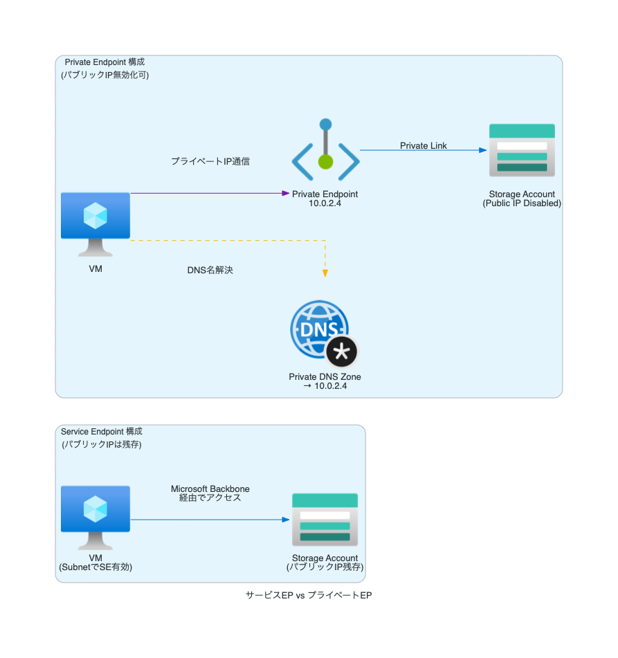
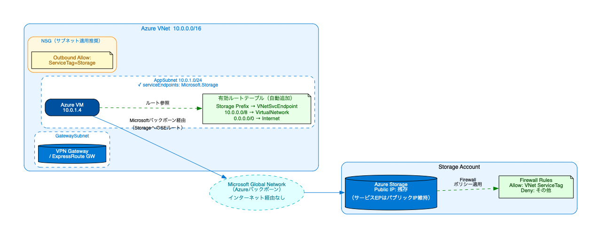
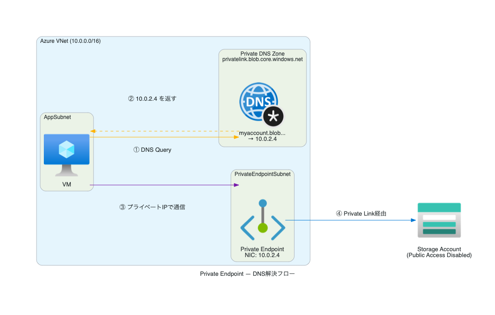
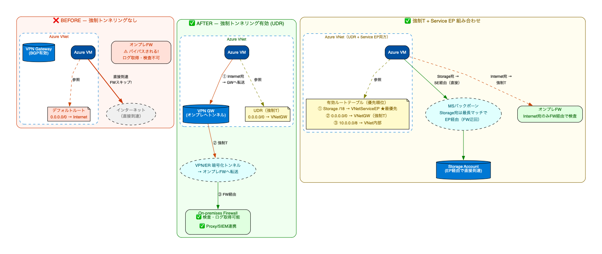
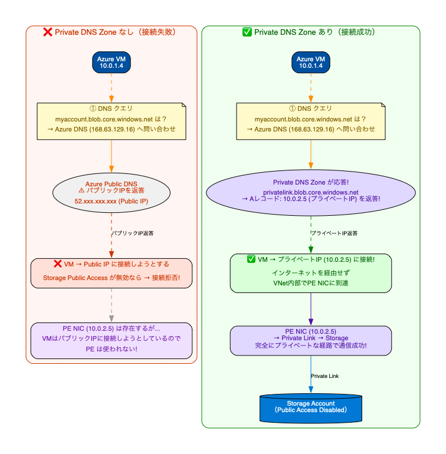
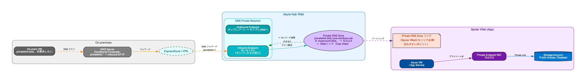
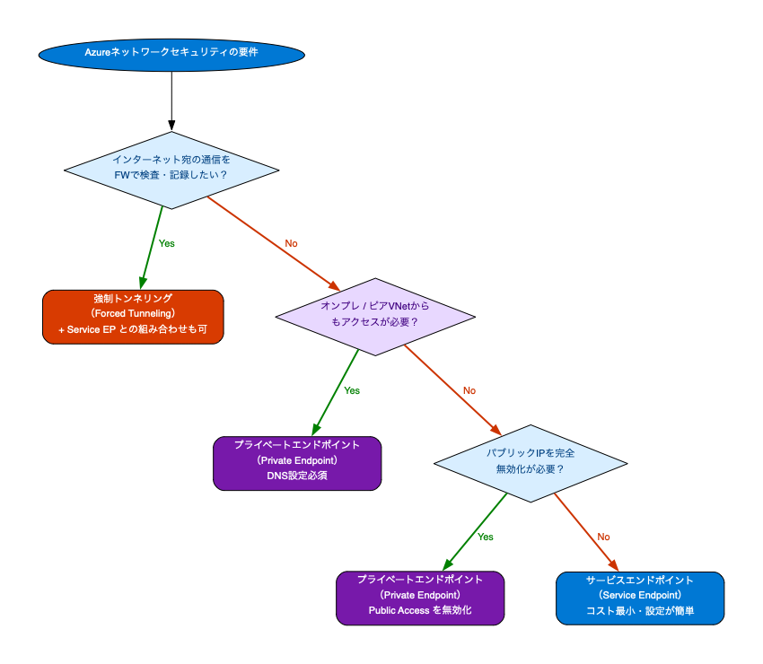
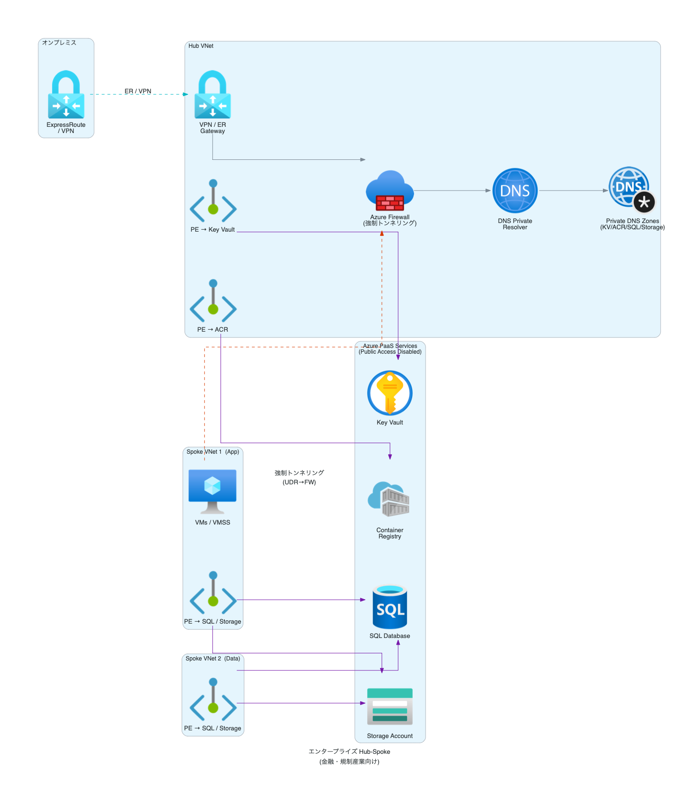

サービスEP・プライベートEP・強制トンネリング
完全理解ガイド
AZ-305試験でネットワークセキュリティ領域は配点が高く、「なぜそのサービスを選ぶか」という アーキテクチャ判断が問われます。本ガイドでは3つの技術を根本から理解し、 どのシナリオで何を使うべきかを確実に判断できるレベルまで解説します。
01. そもそも何が問題なのか
Azureでリソースをデプロイしただけでは、通信はインターネット経由になります。これがどういうリスクを生むかを理解することが出発点です。

プライベートエンドポイントは「サービスそのものをVNet内のNICとして出現させる」技術です。プライベートIPでアクセスし、パブリックアクセスを完全に無効化できます。
02. 試験における重要度
サービスエンドポイント
VNetのサブネットとAzureサービス間のルートをMSバックボーン経由に変更します。サービス側のファイアウォールでVNetのみ許可することで保護します。
- 対象: ストレージ・SQL・KeyVaultなど約8種
- コスト: 無料
- DNSの変更: 不要
- オンプレからの利用: 不可
プライベートエンドポイント
AzureサービスをVNet内にNICとして「移植」します。プライベートIPでアクセスでき、パブリックアクセスを完全に無効化できます。
- 対象: 150以上のAzureサービス
- コスト: NIC料金+データ転送
- DNSの変更: 必須
- オンプレからの利用: 可能
強制トンネリング
VMからのインターネット宛トラフィックをすべてオンプレFWや Azure Firewallに迂回させます。UDRまたはBGPで0.0.0.0/0ルートを上書きします。
- 制御対象: インターネット宛の全通信
- 方式: UDR または BGPルートアドバタイズ
- 注意: GatewaySubnetへの適用禁止
- EPとの組合せ: 推奨
サービスエンドポイント
仕組みから制限まで
サービスエンドポイントは「ルーティング変更」と「ファイアウォール保護」の2つがセットで初めて意味を持ちます。 片方だけでは不完全です。この仕組みを根本から理解することが試験合格の鍵です。
01. 技術的な仕組み
サービスEPを有効にすると何が起きるのか — Azureの内部動作を理解する

02. 対応サービスと特徴
| Azureサービス | サービスタグ | 主なサブリソース | 試験頻出度 | 注意点 |
|---|---|---|---|---|
| Azure Storage | Microsoft.Storage | Blob, File, Queue, Table | ★★★ 最頻出 | 同一リージョンのStorageのみ。RegionalEndpointもある |
| Azure SQL Database | Microsoft.Sql | SQL DB, SQL Managed Instance | ★★★ 最頻出 | SQL MIとの組合せも問われる |
| Azure Key Vault | Microsoft.KeyVault | vault | ★★☆ 中程度 | Key VaultファイアウォールでVNet許可が必要 |
| Azure Service Bus | Microsoft.ServiceBus | namespace | ★★☆ 中程度 | Premiumレベルのみプライベートエンドポイントも対応 |
| Azure Event Hubs | Microsoft.EventHub | namespace | ★★☆ 中程度 | Standardレベル以上 |
| Azure Cosmos DB | Microsoft.AzureCosmosDB | Sql, MongoDB, Cassandra... | ★★☆ 中程度 | APIの種類によって対応状況が異なる |
| Azure App Service | Microsoft.Web | 送信のみ | ★☆☆ 低 | 送信（アウトバウンド）のみ。受信はPrivate EP |
| Azure Container Registry | Microsoft.ContainerRegistry | registry | ★☆☆ 低 | Premium SKU必要 |
03. 設定手順と実装
サブネットでサービスエンドポイントを有効化
Portal: VNet → サブネット → サービスエンドポイント → 対象サービスを選択
これによりAzureがそのサブネットのルートテーブルに VirtualNetworkServiceEndpoint ネクストホップを自動追加します
Azureサービス側のファイアウォール設定
Storage → ネットワーク → 「選択した仮想ネットワークとIPアドレス」を選択 → VNet/サブネットを追加
これをしないとデータは保護されません（EPは経路変更するだけ）
NSGにServiceTagを設定（推奨）
NSGの送信規則で Storage ServiceTagへのアクセスを許可。これにより特定サービスへのアクセスのみ許可し、それ以外はデフォルト拒否にできます
確認: 有効なルートの確認
VM → ネットワーク → 有効なルート で、Storageのプレフィックス宛に VirtualNetworkServiceEndpoint が表示されていれば正常
04. 制限事項 — 試験で問われる落とし穴
オンプレミスから使えない
サービスEPはVNetのサブネット単位の設定です。VPN/ExpressRoute経由でオンプレミスから接続しても、サービスEPのルートは適用されません。オンプレからの安全なアクセスが必要な場合は必ずPrivate Endpointを使用します。
ピアリングVNetをまたがない
VNet-AでService EPを有効にしても、ピアリングしたVNet-BのVMはそのEPを使用できません。各VNetのサブネットで個別にEPを有効にする必要があります。Hub-Spokeアーキテクチャで見落としやすいポイントです。
パブリックIPが残る
サービスEPを使用しても、Storageアカウント等のパブリックIPエンドポイントは残ります。コンプライアンス要件で「パブリックアクセスを完全に無効化」が必要な場合はプライベートEPのみが対応します。
リージョン制限
サービスEPは原則として同一リージョン内のサービスに対してのみ有効です（一部例外あり）。例えば東日本リージョンのVNetから西日本リージョンのStorageへのEPは機能しません。
プライベートエンドポイント
NICからDNSまで完全理解
プライベートエンドポイントはAzureサービスをVNet内にNIC（ネットワークインターフェースカード）として 「出現させる」技術です。DNSの設定を含めた全体フローを理解することが合格への鍵です。
01. 技術的な仕組み — NICとPrivate Link
「サービスがVNetの中に引っ越してくる」イメージで理解してください。でも実際には「Private Link」という仕組みでサービスへの接続をプロキシしています。

02. Private DNS Zoneの名前一覧（重要）
試験では「どのPrivate DNS Zone名を作成するか」が問われます。サービスごとに決まった名前があります。
| Azureサービス | Private DNS Zone の名前 | サブリソース | 備考 |
|---|---|---|---|
| Azure Blob Storage | privatelink.blob.core.windows.net | blob | 最頻出。ファイルとは別のゾーン |
| Azure File Storage | privatelink.file.core.windows.net | file | BlobとFileは別々のPEを作成 |
| Azure Queue Storage | privatelink.queue.core.windows.net | queue | 個別にPEが必要 |
| Azure Table Storage | privatelink.table.core.windows.net | table | 個別にPEが必要 |
| Azure SQL Database | privatelink.database.windows.net | sqlServer | SQL MIは別のゾーン名 |
| Azure SQL Managed Instance | privatelink.{dnsZone}.database.windows.net | managedInstance | ゾーン名は自動生成 |
| Azure Key Vault | privatelink.vaultcore.azure.net | vault | 高頻出。RBAC or アクセスポリシーも確認 |
| Azure Cosmos DB (SQL) | privatelink.documents.azure.com | Sql | APIの種類でゾーン名が変わる |
| Azure Container Registry | privatelink.azurecr.io | registry | Premium SKU必要 |
| Azure App Service | privatelink.azurewebsites.net | sites | 受信用。関数アプリも同じ |
| Azure Service Bus | privatelink.servicebus.windows.net | namespace | Premium tierのみ |
| Azure Event Hubs | privatelink.servicebus.windows.net | namespace | Service Busと同じゾーン名! |
| Azure Kubernetes Service | privatelink.{region}.azmk8s.io | management | Private Clusterで使用 |
| Azure Monitor (Log Analytics) | privatelink.ods.opinsights.azure.com他 | azuremonitor | 複数のゾーンが必要 |
privatelink.servicebus.windows.net という名前はAzure Event HubsとService Busの両方で使用されます。
同一VNetに両方のPEを作る場合は同じPrivate DNS Zoneに両方のAレコードを追加します（ゾーンは1つで共有）。
03. プライベートEPの承認フロー
自動承認（同一テナント・サブスク）
同一テナントまたはサブスクリプション内のリソースに対してPEを作成する場合、対象リソースのRBACで「Network Contributor」または「Owner」ロールを持っていれば自動承認されます。接続状態が「Approved」になります。
手動承認（クロステナント・クロスサブスク）
異なるテナントやサブスクリプションのリソースに対してPEを作成する場合、接続リクエストが「Pending（保留中）」状態になります。対象リソースの管理者が手動で承認する必要があります。
強制トンネリング
全通信をコントロールする
強制トンネリングは、VNet内VMからのインターネット向け通信を、すべてオンプレFW・Azure Firewallを 経由させる技術です。コンプライアンス要件や規制産業で必須とされることが多く、 UDRまたはBGPで実装します。エンドポイントとの組み合わせ方も試験頻出です。
01. 強制トンネリングの仕組み

02. UDR方式 vs BGP方式
| 比較項目 | BGPルートアドバタイズ | |
|---|---|---|
| 設定場所 | Azureポータル / CLIでRoute Tableを作成し、サブネットに関連付ける | オンプレルーターからExpressRoute/VPN GW経由でAzureにルートをアドバタイズ |
| 設定の複雑さ | 比較的シンプル。Azure側だけで完結 | BGP設定の知識が必要。オンプレルーターの設定も必要 |
| 適用スコープ | サブネット単位で手動適用。各サブネットにRoute Tableをアタッチする必要あり | VNet全体に自動適用される（BGPルートが伝播） |
| GatewaySubnetへの適用 | ❌ 絶対に不可（ゲートウェイがループし接続断） | ✅ GWはオンプレへの接続を維持できる（ループしない） |
| 必要なAzureコンポーネント | Route Table リソース（無料）+ VPN GW または ExpressRoute GW | VPN GW (BGP有効) または ExpressRoute GW |
| ルートの優先順位 | Service EP ルート > UDRの0.0.0.0/0（最長プレフィックスマッチ） | Service EP ルート > BGP由来の0.0.0.0/0（同様のルール） |
| 典型的なシナリオ | Azureのみ環境・ハイブリッドの一部サブネットだけFW経由にしたい場合 | 大規模ハイブリッド環境・オンプレネットワーク管理者がルート管理する場合 |
03. 強制トンネリングとエンドポイントの相互作用
強制トンネリング環境でサービスEP/プライベートEPを使うとどうなるか — これが試験でよく問われます
| 組み合わせ | Storageへのトラフィック | Internetへのトラフィック | オンプレFW経由か？ |
|---|---|---|---|
| 強制Tのみ | ⚠ オンプレFW経由でInternet経由 | ✅ オンプレFW経由 | ✅ すべてFW経由 |
| 強制T + Service EP | ✅ MSバックボーン直接（FW経由にならない） | ✅ オンプレFW経由 | ⚠ StorageはFWスキップ（EP優先） |
| 強制T + Private EP | ✅ VNet内のPE NIC経由（完全プライベート） | ✅ オンプレFW経由 | ⚠ StorageはFWスキップ（PE優先） |
| 強制T + Azure Firewall | ✅ Azure FW経由でStorage（FW内でのログ/フィルタ可） | ✅ Azure FW経由 | ✅ すべてAzure FW経由（可視性高い） |
プライベートEPのDNS
完全攻略
プライベートエンドポイントで最も間違えやすいのがDNSです。 「PE作ったのに接続できない」の原因はほぼDNS設定ミスです。 Azure→オンプレ、ハイブリッド環境での名前解決フローを完全理解しましょう。
01. DNS解決フロー — なぜデフォルトでは動かないのか

02. ハイブリッド環境でのDNS構成
オンプレミスとAzureのハイブリッド環境でPrivate Endpointを使う場合のDNS構成は試験頻出です
Azure DNSプライベートリゾルバー（推奨）
Azure DNS Private Resolverはハイブリッド環境のDNS統合のベストプラクティスです。
- インバウンドエンドポイント: オンプレのDNSからAzureへのクエリを受け付け
- アウトバウンドエンドポイント: AzureからオンプレのDNSへフォワード
- VNetにデプロイし、Private DNS Zoneにリンク
- 従来のDNS VMが不要に（管理が楽）
従来の条件付きフォワーダー方式
既存のDNSサーバー（Active Directory DNS等）がある場合の設定方法です。
- オンプレDNSに条件付きフォワーダーを設定
privatelink.blob.core.windows.net→168.63.129.16にフォワード- 168.63.129.16 はAzureの魔法のIP（Azure内からのみ到達可能）
- 各privatelink.* ゾーンに個別のフォワーダーが必要

どれを選ぶべきか？
判断基準の完全ガイド
試験では「このシナリオには何が正解か？」を問う問題が多く出ます。シナリオのキーワードから瞬時に正しい技術を選べるようにします。
01. 主要比較表 — 12の観点で比較
| 比較観点 | サービスEP | 強制トンネリング | |
|---|---|---|---|
| 目的・概要 | ルート最適化 + FW保護 | サービスをVNet内にNICとして出現 | インターネット宛をFW経由に強制 |
| コスト | ✅ 無料 | ⚠ 有料 (NIC + データ転送) | ✅ GW料金のみ（UDR自体は無料） |
| IPアドレスの種類 | パブリックIP（ルートだけ変わる） | プライベートIP (VNet内) | N/A（サービスへのアクセス方法ではない） |
| パブリックアクセス無効化 | ❌ 不可（パブリックIPは残る） | ✅ 可能（Public Network Access: Disabled） | N/A |
| DNS変更の要否 | ✅ 不要（既存DNS名で動作） | ❌ 必須（Private DNS Zone設定） | ✅ 不要 |
| オンプレミスからのアクセス | ❌ 不可（VNetのみ） | ✅ 可能（ER/VPN経由） | N/A（EPではない） |
| ピアリングVNetからのアクセス | ❌ 不可（伝播しない） | ✅ 可能（ルーティング次第） | N/A |
| 設定の複雑さ | ✅ 簡単（サブネット設定+FWルール） | ⚠ 複雑（NIC+DNS+接続承認） | ⚠ 中程度（UDR設計が必要） |
| 対応サービス数 | 限定的（約8サービス） | 豊富（150以上） | N/A |
| NSGによる制御 | ✅ ServiceTag使用で制御可 | ⚠ PEのNIC自体には適用不可（サブネットNSGで制御） | ✅ NSGとUDRの組み合わせで制御 |
| セキュリティレベル | ⭐⭐⭐ 高い MSバックボーン経由 |
⭐⭐⭐⭐⭐ 最高 完全プライベート化 |
⭐⭐⭐⭐ 高い 全通信を可視化・制御 |
| 試験のキーワード | 「コスト最小」「VNetのみ」「設定シンプル」「MSバックボーン」 | 「オンプレからも」「完全プライベート」「コンプライアンス」「パブリックIP不要」 | 「全通信検査」「FW経由」「0.0.0.0/0」「コンプライアンス」 |
02. 選択フローチャート

03. キーワード別 正解早見表
| シナリオのキーワード | 正解の技術 | 理由 |
|---|---|---|
| 「コスト効率よく」「費用を最小化」「VNet内のVMのみアクセス」 | サービスEP | 無料で実装できる唯一の選択肢 |
| 「MSバックボーン経由」「インターネット経由しない」（コスト重視） | サービスEP | サービスEPの本質的な動作 |
| 「オンプレミスからもアクセス」「ExpressRoute経由でも使えるように」 | サービスEPはオンプレから使用不可 | |
| 「ピアリングした別のVNetからもアクセス」 | サービスEPはVNet間で伝播しない | |
| 「パブリックアクセスを完全に無効化」「パブリックエンドポイント不要」 | Public Network Accessをオフにできる | |
| 「コンプライアンス要件」「監査要件」「規制産業」（ストレージアクセス） | 最高レベルのプライベート接続 | |
| 「すべてのインターネット通信をFWで検査」「Outbound通信の制御」 | 強制トンネリング | デフォルトルートをGW経由に変更 |
| 「0.0.0.0/0のルートを変更」「すべてのトラフィックをオンプレFW経由」 | 強制トンネリング | 強制トンネリングの定義そのもの |
| 「GatewaySubnetにUDRを適用する」 | ❌ 誤り・不可 | GatewaySubnetへのUDR適用は禁止 |
| 「サービスEPでオンプレからStorageにアクセス」 | ❌ 誤り・不可 | サービスEPはVNetのサブネット単位のみ |
| 「プライベートEPのDNS設定不要」 | ❌ 誤り | プライベートEPには必ずPrivate DNS Zone設定が必要 |
| 「Service Bus NamespaceのPEのDNS Zone」 | ⚠ EH共通 | Event HubsとService Busは同じゾーン名(servicebus.windows.net) |
実務・試験頻出
アーキテクチャパターン
エンタープライズのHub-Spoke構成に3技術すべてを組み込んだ本番想定のアーキテクチャを解説します。「なぜそのコンポーネントがそこに配置されるか」を理解してください。
01. エンタープライズ Hub-Spoke + 強制トンネリング + PE

① Azure Firewallを中央に配置し、Spoke全体のOutbound通信を集中管理（強制トンネリング）
② Private Endpointは各SpokeとHubのPEサブネットに配置し、PaaSサービスをプライベート化
③ DNS Private ResolverをHubに配置してオンプレとAzureのDNSを統合
④ Private DNS ZoneはSpokeのVNetにもリンク（Hub-Spoke間でDNSは自動伝播しない）
⑤ GatewaySubnetにUDRは絶対に適用しない（接続断の原因になる）
試験でやられる
間違えポイント18選
実際の試験で多くの受験者が誤る問題のパターンを集めました。 「知ってるつもり」だったのに間違えた、というものばかりです。 正確な理解で確実に得点しましょう。
01. サービスエンドポイント関連の落とし穴
「サービスEPを有効にするだけでデータは保護される」→ 間違い
サービスEPをサブネットで有効化しても、それだけでは保護されません。 2つのことが必要です: ①サブネットでEPを有効化、②Azureサービス側のファイアウォールで対象VNet/サブネットを「許可」に追加。 サービス側の設定をしないと、依然としてすべてのIPからアクセス可能な状態です。
「VPN経由でオンプレからサービスEPを使える」→ 使えない
サービスエンドポイントはVNetのサブネットに対して有効化する設定です。VPN/ExpressRouteでオンプレミスからAzure VNetに接続しても、 そのトラフィックはサービスEPのルートを通りません。オンプレからAzureサービスにプライベートアクセスするには必ずプライベートエンドポイントを使います。
「ピアリングVNetのVMもサービスEPを使える」→ 使えない
VNet-AのSubnet-1でService EPを有効にしても、ピアリングしているVNet-BのVMはこのEPを使用できません。 各VNetのサブネットで個別に有効化が必要です。Hub-Spoke構成でHubのサービスEPをSpokeが共有できると思い込むことが多いです。
02. プライベートエンドポイント関連の落とし穴
「プライベートEPを作れば自動的にプライベートIPでアクセスできる」→ DNS設定なしでは動かない
プライベートEPのNICが作成されても、VMがDNS名前解決する際に適切なPrivate DNS Zoneが設定されていないと、 パブリックIPアドレスが返ってきます。Storageのパブリックアクセスを無効化していれば接続失敗します。
「NSGをプライベートEPのNICに直接適用できる」→ 適用されない
プライベートエンドポイントのNICに直接NSGを関連付けることはできません（設定しても無視されます）。 代わりに、プライベートEPが存在するサブネットにNSGを適用することで制御します。 このサブネットNSGは既存のアクセス制御に加えて、PE宛のトラフィックを制御できます。
「Blob StorageとFile StorageのPEは同じDNS Zoneを共有する」→ 別々のゾーンが必要
同一Storageアカウントに対してBlobとFileの両方をプライベートにしたい場合、それぞれ別のPEと別のPrivate DNS Zoneが必要です。
privatelink.blob.core.windows.net と privatelink.file.core.windows.net は別のゾーンです。
「Hub VNetにPrivate DNS ZoneをリンクすればSpokeからも名前解決できる」→ できない
Private DNS ZoneのVNetリンクは、そのVNet内からの名前解決にのみ有効です。 ピアリングを通じてDNSクエリが伝播することはありません。 Spoke VNetからも名前解決が必要なら、SpokeのVNetにもPrivate DNS Zoneをリンクする必要があります。
03. 強制トンネリング関連の落とし穴
「GatewaySubnetにも0.0.0.0/0 → VNetGWのUDRを適用する」→ 接続断！
これは試験で最も狙われる引っかけです。GatewaySubnetに
0.0.0.0/0 → Virtual Network Gateway のUDRを適用すると、
VPN GatewayがすべてのトラフィックをVPN Gatewayに転送しようとしてループが発生し、
オンプレミスとのVPN/ExpressRoute接続が完全に切断されます。
「強制トンネリングがあるとAzureサービスへの通信もFW経由になる」→ Service EPがある場合は違う
強制トンネリング（0.0.0.0/0 → GW）が有効でも、Service EPが有効なサブネットでは Storageへの通信はService EPのより具体的なルートが優先されます（最長プレフィックスマッチ）。 Storage宛の通信はMSバックボーン直接になり、FWを経由しません。 これを意図しない場合は、すべての通信をFW経由にしたいならService EPを使わずPrivate EP + Azure FW経由の構成にします。
04. NSG・ルーティング関連の落とし穴
「NSGだけでAzureサービスへのトラフィックをMSバックボーン経由にできる」→ できない
NSGはトラフィックを許可/拒否するためのもので、ルートを変更しません。 MSバックボーン経由のルート最適化はService Endpointが担当します。 NSGとService EPは役割が異なる補完的な機能です。
「BGPで強制トンネリングを設定するとGatewaySubnetにも自動でUDRが付く」→ BGPは別の仕組み
BGPによる強制トンネリングはUDRとは異なる仕組みです。 オンプレルーターからBGPで0.0.0.0/0をアドバタイズすると、VNet GWがBGP由来のルートとして学習し、 VNet全体にルートが伝播します。UDRのようなサブネット個別の設定は不要で、 GatewaySubnetもループせずに動作します（ゲートウェイはオンプレへのルートを持っているため）。
05. サービス固有の落とし穴
Azure SQL DatabaseとSQL Managed Instanceは同じPrivate DNS Zone?
異なります。SQL DBは privatelink.database.windows.net、SQL MIは privatelink.{dnsZone}.database.windows.net（dnsZoneは自動生成）です。
Event HubsとService BusのPrivate DNS Zoneは同じ名前?
はい、両方とも privatelink.servicebus.windows.net を使用します。同一VNetに両サービスのPEがある場合、同じゾーンに複数のAレコードを追加します。
Container RegistryのService EndpointはBasic SKUでも使える?
Container RegistryのPrivate EndpointはPremium SKUのみ対応です。Basic/Standard SKUではPrivate EPは使用できません。Service Endpointも同様にPremiumのみです。
App ServiceのService EPは受信トラフィックも保護できる?
App ServiceのService Endpointはアウトバウンド（送信）方向のみです（App ServiceからVNet経由でAzureサービスへ）。受信トラフィックの保護にはPrivate Endpointを使います。
Service Bus NamespaceのPrivate EPはStandard tierでも使える?
Service BusのPrivate EndpointはPremium tierのみ対応です。StandardではPEは使用できず、Service Endpointも使えません。Premiumへのアップグレードが必要です。
Private EndpointとPrivate Link Serviceは同じもの?
異なります。Private EndpointはAzureサービスをVNet内に露出する「消費者側」の仕組みです。Private Link Serviceは自分のサービスを他のVNetに公開する「提供者側」の仕組みです。Load Balancerの背後に置いたカスタムサービスをPrivate EP経由で提供できます。
「プライベートEPを使えば自動的に承認される」→ クロステナント/クロスサブスクリプションでは手動承認が必要
同一テナント・同一サブスクリプション内のリソースへのPE作成は、適切なRBACロールがあれば自動承認されます。 しかし異なるテナントや異なるサブスクリプション（例: Shared Services環境）では、 接続リクエストが「Pending」状態になり、対象リソースの管理者が手動で承認するまで接続できません。 マルチテナント・マルチサブスクリプション設計では、この承認フローを考慮した運用設計が必要です。
AZ-305形式
シナリオ問題演習
実際の試験に近い形式のシナリオ問題です。選択肢をクリックして正誤を確認し、解説を読んでください。 「なぜ他の選択肢は間違いなのか」まで理解することが合格の鍵です。
シナリオ: コスト効率・VNetのみアクセス
あなたは Azure VNet 内の複数の VM から Azure Blob Storage にアクセスするシステムを設計しています。
要件は次のとおりです：
・トラフィックをインターネット経由にしたくない
・コストを最小化したい
・アクセスするのは同じ VNet 内の VM のみ
最も適切な構成はどれですか？
- A. プライベートエンドポイントを作成し、Private DNS Zone を設定する
- B. VNet サービスエンドポイントを有効化し、Storage アカウントのファイアウォールで対象 VNet を許可する
- C. VPN Gateway を展開し、Storage へのサイト間 VPN を構成する
- D. NSG に Storage サービスタグへのアウトバウンドルールのみを追加する
なぜBが正解か: 要件は「VNet内VMのみ」「インターネット経由しない」「コスト最小化」の3点。サービスエンドポイントは無料でMSバックボーン経由のルートを設定し、Storageのファイアウォールと組み合わせることで要件をすべて満たします。
なぜAは不正解か: プライベートエンドポイントはNIC料金+データ転送料が発生し、DNS設定も必要。「コスト最小化」という要件に反します。VNet内のみのアクセスならサービスEPで十分です。
なぜCは不正解か: VPN GatewayはVM同士の接続やオンプレとの接続に使うもので、StorageへのアクセスにVPN GWを使うのは設計として不適切かつ高コストです。
なぜDは不正解か: NSGはトラフィックの許可/拒否を制御しますが、ルートは変更しません。NSGだけではトラフィックはインターネット経由のままです。
シナリオ: オンプレミスからの安全なアクセス
金融機関のシステムで、オンプレミスデータセンターから ExpressRoute 経由で Azure SQL Database にアクセスします。 セキュリティポリシーにより、SQL Database のパブリックエンドポイントをすべてのネットワークから無効化することが義務付けられています。 DNS の設定を含む最も適切な構成はどれですか？
- A. サービスエンドポイントを設定し、SQL DB のファイアウォールでオンプレミスの IP レンジを許可する
- B. プライベートエンドポイントを作成し、Private DNS Zone を設定し、オンプレ DNS サーバーに条件付きフォワーダーを設定する
- C. サービスエンドポイントを設定し、Public Network Access を Disabled にする
- D. プライベートエンドポイントを作成するだけで、DNS の追加設定は不要
なぜBが正解か: 要件は①オンプレからのアクセス②パブリックIP完全無効化。この2点を満たせるのはプライベートEPのみ。さらにオンプレのDNSサーバーから
privatelink.database.windows.net を Azure DNS（168.63.129.16）にフォワードする条件付きフォワーダーの設定が必要です。なぜAは不正解か: サービスエンドポイントはオンプレミスから使用できません。VPN/ER経由でもサービスEPのルートはオンプレトラフィックに適用されません。
なぜCは不正解か: Public Network Access を Disabled にするとパブリックIPからのアクセスが禁止されます。しかしサービスEPはオンプレからアクセスできないため、オンプレからも接続不能になります。
なぜDは不正解か: プライベートEPを作成しただけでは、オンプレDNSが
myserver.database.windows.net を解決するとパブリックIPが返ります。Private DNS Zoneの設定とオンプレDNSの条件付きフォワーダー設定が必須です。
シナリオ: 強制トンネリングの設計
規制産業のお客様から「Azure VNet 内のすべての VM からのインターネット宛トラフィックを、 オンプレミスの既存ファイアウォールで検査・ログ記録したい」という要件があります。 VNet には VPN Gateway が展開済みで、サブネットは GatewaySubnet・AppSubnet・DataSubnet の3つがあります。 最も適切な構成はどれですか？
- A. GatewaySubnet・AppSubnet・DataSubnet すべてに 0.0.0.0/0 → Virtual Network Gateway の UDR を適用する
- B. AppSubnet と DataSubnet のみに 0.0.0.0/0 → Virtual Network Gateway の UDR を適用する。GatewaySubnet には適用しない
- C. すべてのサブネットの NSG にインターネットへのアウトバウンドを拒否するルールを追加する
- D. Azure Firewall を展開し、すべてのトラフィックを Azure Firewall 経由にする
なぜBが正解か: 強制トンネリングの要件です。UDR（0.0.0.0/0 → VNetGW）をアプリ用サブネットに適用し、GWからオンプレFWへトンネリングします。GatewaySubnetへのUDR適用は絶対禁止（接続ループが発生）。
なぜAは不正解か: GatewaySubnetに 0.0.0.0/0 → VNetGW のUDRを適用すると、GW自身の通信がGWに向かうループが発生し、VPN接続が完全に切断されます。試験で最も狙われる引っかけです。
なぜCは不正解か: NSGはトラフィックを拒否できますが、「オンプレFWで検査・ログ記録する」という要件を満たしません。拒否するだけで、FWを経由させることができません。
なぜDは不正解か: Azure Firewallは有効な選択肢ですが、要件は「オンプレミスの既存ファイアウォール」での検査です。Azure Firewallを展開すると新規コストが発生し、「既存FWの活用」という要件に合いません。
シナリオ: ルートの優先順位
Azure VNet の AppSubnet に以下の設定がされています：
・強制トンネリング用UDR: 0.0.0.0/0 → Virtual Network Gateway
・Service Endpoint: Microsoft.Storage が有効
このサブネット上の VM が Azure Blob Storage（東日本）にアクセスするとき、トラフィックはどの経路をたどりますか？
- A. VPN Gateway → オンプレミス Firewall → インターネット → Storage
- B. Microsoft Azure バックボーンネットワーク → Storage（FW を経由しない）
- C. インターネット直接 → Storage
- D. 設定が競合するためトラフィックはドロップされる
なぜBが正解か: Azureのルート選択は最長プレフィックスマッチ（Longest Prefix Match）で決まります。Service Endpointが有効な場合、StorageのIPアドレスへの具体的なルート（例: /16, /18）が自動追加されます。これは 0.0.0.0/0 よりプレフィックスが具体的なため優先され、トラフィックはMSバックボーン経由でStorageに直接到達します。FWを経由しません。
なぜAは不正解か: 強制トンネリング（0.0.0.0/0）はService EPの具体的ルートより優先度が低いため、Storage宛はGW経由になりません。
なぜCは不正解か: 強制トンネリングが有効なため、デフォルトルート（0.0.0.0/0）はGW方向に向いています。ただしStorage宛はService EPが優先するので、Cも誤りです。
なぜDは不正解か: ルートが競合しても最長プレフィックスマッチで正しく処理されます。ドロップは発生しません。
シナリオ: Hub-Spoke DNS設計
Hub-Spoke 構成（Hub VNet + Spoke-A VNet + Spoke-B VNet）があります。
Hub VNet 内に Private DNS Zone privatelink.blob.core.windows.net を作成し、
Hub VNet にリンクしました。
Spoke-A VNet 上の VM からプライベートエンドポイント経由で Storage にアクセスしようとしましたが、
パブリック IP に解決されてしまいます。原因として最も可能性が高いものはどれですか？
- A. プライベートエンドポイントが正しく作成されていない
- B. Storage アカウントのファイアウォール設定が誤っている
- C. Private DNS Zone が Spoke-A VNet にリンクされていない
- D. Hub-Spoke ピアリングが正しく設定されていない
なぜCが正解か: Private DNS ZoneのVNetリンクはVNet間で自動的に伝播しません。Spoke-A VNetの VM がDNSクエリを送信すると、Spoke-A VNetにリンクされているPrivate DNS Zoneを検索します。Hub VNetにリンクしていてもSpokeには伝播しないため、パブリックIPが返ります。アクセスするVNetそれぞれに個別リンクが必要です。
なぜAは不正解か: PE自体が問題なら接続エラーになりますが、症状は「パブリックIPに解決される」なのでDNS問題です。
なぜBは不正解か: ファイアウォール設定の問題は接続拒否エラーを引き起こしますが、DNS解決の段階での問題ではありません。
なぜDは不正解か: ピアリングの問題なら通信自体ができませんが、問題はDNS名前解決の段階でパブリックIPが返ることです。ピアリングはDNS解決には関係しません。
シナリオ: SKU制限とPE
開発チームが Azure Container Registry（Standard SKU）を使用しており、 セキュリティチームから「CI/CD パイプラインからのコンテナイメージのプルをプライベートネットワーク経由のみに制限し、 パブリックアクセスを無効化してほしい」と要請があります。 現状の Standard SKU のまま要件を達成するために何をすべきですか？
- A. Standard SKU の ACR にプライベートエンドポイントを作成し、パブリックアクセスを無効化する
- B. Standard SKU の ACR にサービスエンドポイントを設定し、特定 VNet のみ許可する
- C. ACR を Premium SKU にアップグレードしてからプライベートエンドポイントを作成し、パブリックアクセスを無効化する
- D. NSG でACRへのインターネットからのアクセスをブロックする
なぜCが正解か: Azure Container Registry のプライベートエンドポイントはPremium SKU のみサポートされています。Standard SKU では Private Endpoint を作成できません。要件を達成するにはまず Premium SKU へのアップグレードが必要です。
なぜAは不正解か: Standard SKU の ACR に Private Endpoint を作成しようとするとエラーになります。Premium SKU が必要です。
なぜBは不正解か: ACR の Service Endpoint も Premium SKU のみ対応です。また Service Endpoint ではパブリックアクセスを完全に無効化することはできません。
なぜDは不正解か: NSG はサブネットへのトラフィックを制御しますが、ACR 自体のパブリックエンドポイントへのアクセスを制限するものではありません。ACR へのアクセス元が VNet 外にある場合は NSG では制御できません。
シナリオ: BGPによる強制トンネリング
大規模なハイブリッド環境で、ネットワーク管理者はオンプレミス側から BGP でルートを管理しています。 Azure VNet 内のすべての VM のインターネット宛トラフィックをオンプレ Firewall 経由にしたいと考えています。 BGP を使った強制トンネリングを実現するために必要な設定はどれですか？
- A. すべてのサブネット（GatewaySubnet 含む）に UDR を作成し 0.0.0.0/0 → VNetGW を設定する
- B. GatewaySubnet にのみ UDR を作成し 0.0.0.0/0 → VNetGW を設定する
- C. オンプレミスルーターから BGP で 0.0.0.0/0 デフォルトルートを Azure VPN Gateway にアドバタイズする
- D. Azure Portal で VNet の「強制トンネリング」オプションを有効にする
なぜCが正解か: BGPを使った強制トンネリングは、オンプレルーターから 0.0.0.0/0 のデフォルトルートをBGPでアドバタイズすることで実現します。Azure VPN GatewayがこのBGPルートを学習し、VNet全体に伝播させます。UDRを手動で設定する必要がなく、GatewaySubnetのループ問題も発生しません。
なぜAは不正解か: GatewaySubnetにUDRを適用するのは禁止です（接続断の原因）。
なぜBは不正解か: GatewaySubnetへのUDR適用は禁止です。また GatewaySubnetのみに適用してもアプリVMには効果がありません。
なぜDは不正解か: Azure Portal に「強制トンネリング」という単独のトグルオプションは存在しません。UDRまたはBGPで実装します。
| 問題 | 問われたポイント | 正解 | 核心的な理解 |
|---|---|---|---|
| Q1 | コスト最小・VNetのみ | サービスEP | 無料で要件を満たす。DNSも不要 |
| Q2 | オンプレアクセス+パブリックIP無効化 | 条件付きフォワーダーまでセット | |
| Q3 | 強制トンネリングのUDR適用範囲 | AppSubnet/DataSubnetのみ | GatewaySubnetへのUDR適用は禁止 |
| Q4 | 強制T + Service EPのルート優先順位 | 最長プレフィックスマッチ | Service EPルートが0.0.0.0/0より優先 |
| Q5 | Hub-Spoke DNS Zoneリンク | DNSはピアリングを通じて伝播しない | |
| Q6 | ACRのSKU制限 | ACR PE = Premium SKUのみ | |
| Q7 | BGPによる強制トンネリング | BGPアドバタイズ | UDR不要・GatewaySubnetループなし |